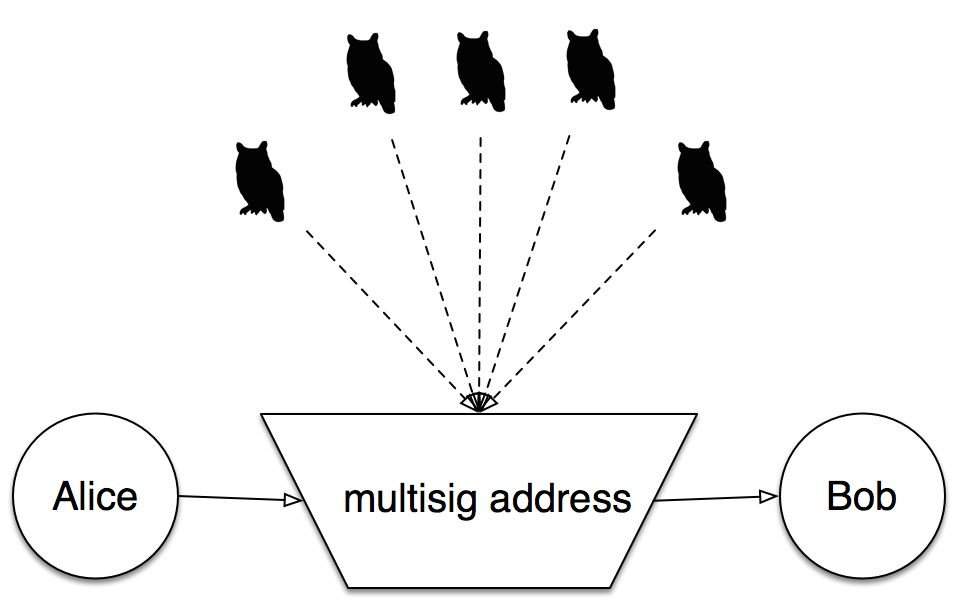

The Distributed Oracle SystemOrisi is an extension of the Bitcoin protocol which allows for outisde circumstances to be evaluated by a distributed node system, minimizing the risks of erroneous results or hacked systems. |
 |
Orisi